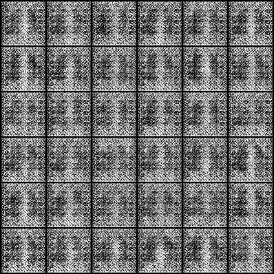
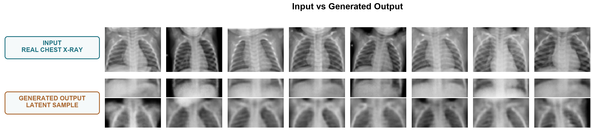
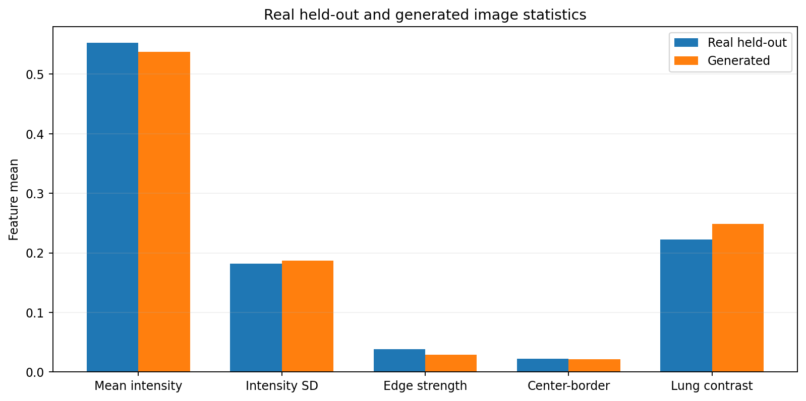
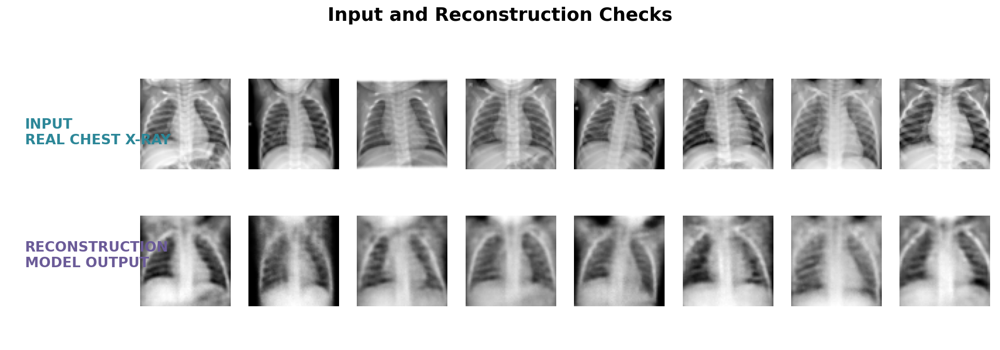

TASK 01
建立输入
读取 NORMAL 胸片，统一灰度、尺寸和数值范围，得到 [B,1,64,64] 的批次。
我们把胸片转换为统一的图像张量，用 ResidualConvVAE 学习一个 64 维概率潜空间，再由解码器还原或生成胸片。页面先说明任务和模型，再结合图像和指标查看结果。
先弄清楚模型要完成什么，再追踪一张胸片如何经过编码、采样和解码，最后把图像、曲线和指标放在一起阅读。
Notebook 使用 Chest X-ray Pneumonia 数据中的 NORMAL 胸片来学习图像分布，文件夹名称只用于选取图像，不作为疾病分类标签。我们先把图像统一成单通道 64×64 张量，再训练一个残差卷积变分自编码器（ResidualConvVAE）。训练结束后，既要检查已知图像的重建，也要检查潜空间生成的新样本是否具有结构、差异和连续变化。
读取 NORMAL 胸片，统一灰度、尺寸和数值范围，得到 [B,1,64,64] 的批次。
用编码器得到 mu 与 logvar，重参数化后交给解码器，联合优化重建、梯度和 KL 损失。
观察重建 L1、样本两两 L1、图像特征均值差，并用潜空间生成、最近邻和插值分析输出。
| 实践中要回答的问题 | 对应检查 |
|---|---|
| 图像怎样变成模型可以处理的数字？ | 预处理顺序、shape、归一化范围 |
| 模型怎样把图像压缩成可采样的表示？ | 编码器、mu、logvar、重参数化 |
| 训练后输出是否保留胸片结构并且不完全相同？ | 重建、潜空间操作、图像级指标 |
Notebook 对图像进行 EXIF 方向校正，转成灰度图，先缩放到 72，再中心裁剪为 64×64，最后把像素从 [0,1] 映射到 [-1,1]。这样做既统一了空间尺寸，也让解码器最后的 Tanh 输出与训练输入处在同一范围。
模型值 = 2 × 显示值 − 1
显示值 0.50 位于 [0,1]，映射后为 0.00。

输入规模：使用 1,073 张训练图像和 268 张留出图像，批大小为 64。
mu 和对数方差 logvar，两者共同描述潜空间中的一个概率位置。输入先经过一个 32 通道的 stem，再通过四个下采样块逐步提取更深的特征：空间尺寸从 64×64 变为 32×32、16×16、8×8 和 4×4，通道数依次为 32、64、128、256、256。最后两个线性层分别把 [B,256,4,4] 映射为 [B,64] 的 mu 和 logvar。
mu 表示这张胸片在 64 维潜空间中的中心位置。相似结构的图像通常会在表示空间中更接近。
logvar 是方差的对数，数值形式更适合由网络学习；它决定从中心位置附近取样时的尺度。
先由 logvar 得到标准差，再采样一个标准正态噪声 epsilon。潜向量 z 是 mu 与带尺度噪声的和；它保留了输入图像的信息，也允许同一图像附近出现一小片连续的潜空间区域。
解码器先用线性层把 [B,64] 还原为 [B,256,4,4]，再经过四个上采样块逐步恢复空间尺寸，最后用 3×3 卷积和 Tanh 得到 [B,1,64,64]。显示时再把 [-1,1] 映射回灰度范围。
比较输入和重建图像每个像素的绝对差，约束肺野、心影和整体灰度。
先计算水平与垂直方向的相邻像素差，再比较输入和重建的梯度，保留肋骨和肺纹理等变化。
让每张图像的潜变量分布靠近标准正态，避免潜空间只剩互不相连的孤立位置。
Notebook 中的总损失是 Lpixel + 0.25 × Lgradient + β × LKL。β 在前 10 轮从较小值逐渐增加到 0.0005，让模型逐步学习图像结构并整理潜空间。
示例代码使用 AdamW、学习率 2e-4、权重衰减 1e-4 和批大小 64。训练曲线记录总损失、重建 L1、梯度 L1 和 KL 项，读曲线时要结合图像结果一起判断。
从两张不同训练图像的潜向量之间取插值位置，再加入少量按潜变量尺度控制的噪声，交给解码器输出新的胸片。
把生成图和训练图都下采样到 16×16 并展平，用 L1 距离逐一比较，找到最接近的训练参考图。它用于检查相似程度，不单独承担隐私判断。
在两个潜向量之间取多个 α，计算 (1−α)zA + αzB。相邻输出平滑变化，说明解码器学到的是连续映射。
| 项目 | 记录 | 怎样理解 |
|---|---|---|
| 训练记录 | 见训练代码和曲线 | 训练历史包含总损失、重建 L1、梯度 L1 和 KL 项 |
| 输入与划分 | 1,073 张训练图像；268 张留出图像 | 留出图像只用于训练后的检查 |
| 生成候选 | 128 个潜空间候选；展示其中 16 张 | 在不同训练图像的潜向量之间插值后生成，再按图像统计选取展示样本 |
| 输出 shape | [B,1,64,64] | 与输入图像保持相同的单通道空间尺寸 |

128 个候选潜向量经过训练后的解码器得到新图像；这里展示按图像统计选出的 16 张样本。

图中左侧已经标明：INPUT / REAL CHEST X-RAY 是真实输入，GENERATED OUTPUT / LATENT SAMPLE 是潜空间生成结果。两排不代表同一张胸片的前后处理关系。

曲线包含总损失、重建 L1、梯度 L1 和 KL 项；前两项逐步下降，KL 项在前期完成权重预热后保持在约 3 附近。

直方图用于检查整体灰度分布是否偏离真实留出图像。

五项特征均值差为 0.0114，用于比较真实留出图像和生成图像的整体统计。

前两排分别是留出集输入和重建结果，最后一排是训练图像重建，用于观察模型对已见和未见图像的还原。
结果来源：SDU-Neuro-2 Notebook code/sdu_neuro_2.ipynb 及对应结果记录。
留出集图像经过编码和解码后的 L1 差异。它主要说明模型是否保留了未参与参数更新图像的整体灰度和结构。
展示生成样本之间的两两 L1。数值反映候选图像之间的差异，需要结合生成网格和最近邻图一起观察。
五项图像特征的平均绝对差，用于比较真实留出图像和生成图像的整体统计。
最近邻比较回答“生成图像与训练参考有多接近”，潜空间插值回答“两个潜位置之间是否产生连续变化”。这两种分析和结果图片一起使用，能把“看起来像”拆成可以解释的观察步骤。
[B,1,64,64]，数值范围为 [-1,1]。mu、logvar、重建图像 shape 以及三项损失。当你能解释一张胸片如何变成 64 维潜变量、一个潜变量如何变成 64×64 图像，以及每个指标具体比较了什么，这次实践的主要任务就完成了。